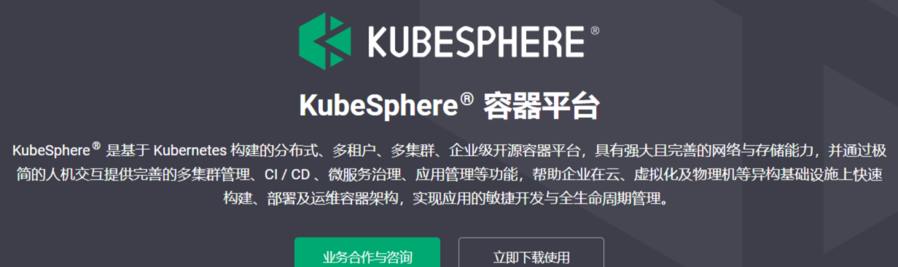
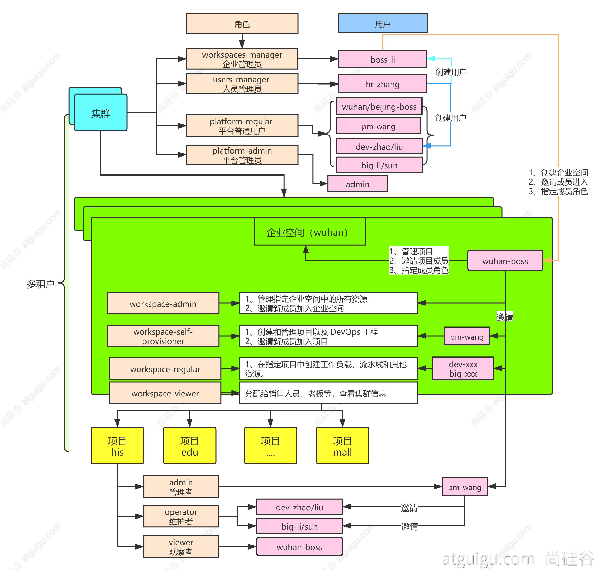
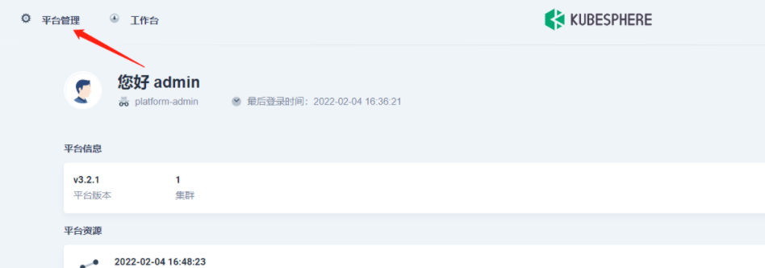
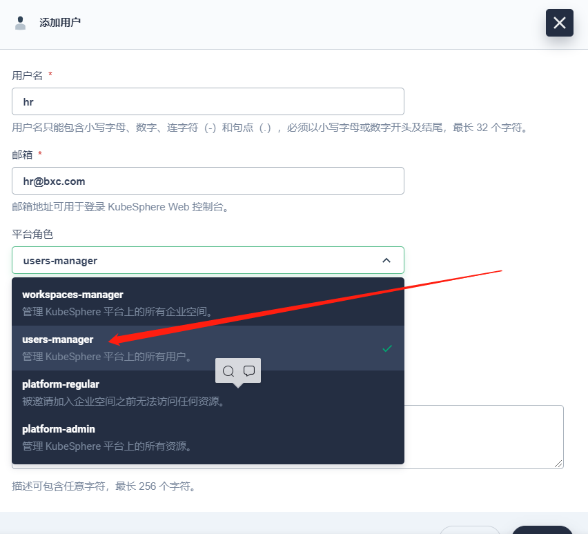
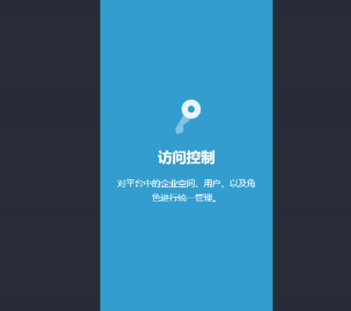

<!DOCTYPE html>


<html lang="zh-Hans">
  

    <head>
      <meta charset="utf-8" />
        
      <meta name="description" content="Technical output and problem solving record" />
      
      <meta
        name="viewport"
        content="width=device-width, initial-scale=1, maximum-scale=1"
      />
      <title>04云原生--KubeSphere入门 |  Tunan`s Blog</title>
  <meta name="generator" content="hexo-theme-ayer">
      
      <link rel="shortcut icon" href="/favicon.ico" />
       
<link rel="stylesheet" href="/dist/main.css">

      <link
        rel="stylesheet"
        href="https://cdn.jsdelivr.net/gh/Shen-Yu/cdn/css/remixicon.min.css"
      />
      
<link rel="stylesheet" href="/css/custom.css">
 
      <script src="https://cdn.jsdelivr.net/npm/pace-js@1.0.2/pace.min.js"></script>
       
 

      <link
        rel="stylesheet"
        href="https://cdn.jsdelivr.net/npm/@sweetalert2/theme-bulma@5.0.1/bulma.min.css"
      />
      <script src="https://cdn.jsdelivr.net/npm/sweetalert2@11.0.19/dist/sweetalert2.min.js"></script>

      <!-- mermaid -->
      
      <style>
        .swal2-styled.swal2-confirm {
          font-size: 1.6rem;
        }
      </style>
    </head>
  </html>
</html>


<body>
  <div id="app">
    
      
    <main class="content on">
      <section class="outer">
  <article
  id="post-04云原生-KubeSphere入门"
  class="article article-type-post"
  itemscope
  itemprop="blogPost"
  data-scroll-reveal
>
  <div class="article-inner">
    
    <header class="article-header">
       
<h1 class="article-title sea-center" style="border-left:0" itemprop="name">
  04云原生--KubeSphere入门
</h1>
 

      
    </header>
     
    <div class="article-meta">
      <a href="/2022/03/29/04%E4%BA%91%E5%8E%9F%E7%94%9F-KubeSphere%E5%85%A5%E9%97%A8/" class="article-date">
  <time datetime="2022-03-29T01:44:47.000Z" itemprop="datePublished">2022-03-29</time>
</a> 
  <div class="article-category">
    <a class="article-category-link" href="/categories/%E4%BA%91%E5%8E%9F%E7%94%9F/">云原生</a>
  </div>
  
<div class="word_count">
    <span class="post-time">
        <span class="post-meta-item-icon">
            <i class="ri-quill-pen-line"></i>
            <span class="post-meta-item-text"> Word count:</span>
            <span class="post-count">1.2k</span>
        </span>
    </span>

    <span class="post-time">
        &nbsp; | &nbsp;
        <span class="post-meta-item-icon">
            <i class="ri-book-open-line"></i>
            <span class="post-meta-item-text"> Reading time≈</span>
            <span class="post-count">5 min</span>
        </span>
    </span>
</div>
 
    </div>
      
    <div class="tocbot"></div>


  
    <div class="article-entry" itemprop="articleBody">
       
  <h1 id="KubeSphere平台安装"><a href="#KubeSphere平台安装" class="headerlink" title="KubeSphere平台安装"></a>KubeSphere平台安装</h1><span id="more"></span>

<p></p>
<p>参考手册中的安装步骤：</p>
<ul>
<li><p>选择4核8G（master）、8核16G（node1）、8核16G（node2） 三台机器，按量付费进行实验，CentOS7.9</p>
</li>
<li><p>安装Docker</p>
</li>
<li><p>安装Kubernetes</p>
</li>
<li><p>安装KubeSphere前置环境</p>
</li>
<li><p>安装KubeSphere</p>
</li>
</ul>
<p>注意三台服务器要内网互通，每个机器有自己的域名，并且防火墙开发30000-32767端口</p>
<h1 id="使用KuberKey创建集群"><a href="#使用KuberKey创建集群" class="headerlink" title="使用KuberKey创建集群"></a>使用KuberKey创建集群</h1><h2 id="1、下载KubeKey"><a href="#1、下载KubeKey" class="headerlink" title="1、下载KubeKey"></a>1、下载KubeKey</h2><pre><code class="bash">export KKZONE=cn


curl -sfL https://get-kk.kubesphere.io | VERSION=v1.1.1 sh -

chmod +x kk
</code></pre>
<h2 id="2、创建集群配置文件"><a href="#2、创建集群配置文件" class="headerlink" title="2、创建集群配置文件"></a>2、创建集群配置文件</h2><pre><code class="bash">./kk create config --with-kubernetes v1.20.4 --with-kubesphere v3.1.1
</code></pre>
<h2 id="3、创建集群"><a href="#3、创建集群" class="headerlink" title="3、创建集群"></a>3、创建集群</h2><pre><code class="bash">./kk create cluster -f config-sample.yaml
</code></pre>
<p>config-sample.yaml示例</p>
<pre><code class="yaml">apiVersion: kubekey.kubesphere.io/v1alpha1
kind: Cluster
metadata:
  name: sample
spec:
  hosts:
  - &#123;name: master, address: 10.140.126.6, internalAddress: 10.140.126.6, user: root, password: Hello777&#125;
  - &#123;name: node1, address: 10.140.122.56, internalAddress: 10.140.122.56, user: root, password: Hello777&#125;
  - &#123;name: node2, address: 10.140.122.39, internalAddress: 10.140.122.39, user: root, password: Hello777&#125;
  roleGroups:
    etcd:
    - master
    master: 
    - master
    worker:
    - node1
    - node2
  controlPlaneEndpoint:
    domain: lb.kubesphere.local
    address: &quot;&quot;
    port: 6443
  kubernetes:
    version: v1.20.4
    imageRepo: kubesphere
    clusterName: cluster.local
  network:
    plugin: calico
    kubePodsCIDR: 10.233.64.0/18
    kubeServiceCIDR: 10.233.0.0/18
  registry:
    registryMirrors: []
    insecureRegistries: []
  addons: []


---
apiVersion: installer.kubesphere.io/v1alpha1
kind: ClusterConfiguration
metadata:
  name: ks-installer
  namespace: kubesphere-system
  labels:
    version: v3.1.1
spec:
  persistence:
    storageClass: &quot;&quot;       
  authentication:
    jwtSecret: &quot;&quot;
  zone: &quot;&quot;
  local_registry: &quot;&quot;        
  etcd:
    monitoring: false      
    endpointIps: localhost  
    port: 2379             
    tlsEnable: true
  common:
    redis:
      enabled: false
    redisVolumSize: 2Gi 
    openldap:
      enabled: false
    openldapVolumeSize: 2Gi  
    minioVolumeSize: 20Gi
    monitoring:
      endpoint: http://prometheus-operated.kubesphere-monitoring-system.svc:9090
    es:  
      elasticsearchMasterVolumeSize: 4Gi   
      elasticsearchDataVolumeSize: 20Gi   
      logMaxAge: 7          
      elkPrefix: logstash
      basicAuth:
        enabled: false
        username: &quot;&quot;
        password: &quot;&quot;
      externalElasticsearchUrl: &quot;&quot;
      externalElasticsearchPort: &quot;&quot;  
  console:
    enableMultiLogin: true 
    port: 30880
  alerting:       
    enabled: false
    # thanosruler:
    #   replicas: 1
    #   resources: &#123;&#125;
  auditing:    
    enabled: false
  devops:           
    enabled: false
    jenkinsMemoryLim: 2Gi     
    jenkinsMemoryReq: 1500Mi 
    jenkinsVolumeSize: 8Gi   
    jenkinsJavaOpts_Xms: 512m  
    jenkinsJavaOpts_Xmx: 512m
    jenkinsJavaOpts_MaxRAM: 2g
  events:          
    enabled: false
    ruler:
      enabled: true
      replicas: 2
  logging:         
    enabled: false
    logsidecar:
      enabled: true
      replicas: 2
  metrics_server:             
    enabled: false
  monitoring:
    storageClass: &quot;&quot;
    prometheusMemoryRequest: 400Mi  
    prometheusVolumeSize: 20Gi  
  multicluster:
    clusterRole: none 
  network:
    networkpolicy:
      enabled: false
    ippool:
      type: none
    topology:
      type: none
  openpitrix:
    store:
      enabled: false
  servicemesh:    
    enabled: false  
  kubeedge:
    enabled: false
    cloudCore:
      nodeSelector: &#123;&quot;node-role.kubernetes.io/worker&quot;: &quot;&quot;&#125;
      tolerations: []
      cloudhubPort: &quot;10000&quot;
      cloudhubQuicPort: &quot;10001&quot;
      cloudhubHttpsPort: &quot;10002&quot;
      cloudstreamPort: &quot;10003&quot;
      tunnelPort: &quot;10004&quot;
      cloudHub:
        advertiseAddress: 
          - &quot;&quot;           
        nodeLimit: &quot;100&quot;
      service:
        cloudhubNodePort: &quot;30000&quot;
        cloudhubQuicNodePort: &quot;30001&quot;
        cloudhubHttpsNodePort: &quot;30002&quot;
        cloudstreamNodePort: &quot;30003&quot;
        tunnelNodePort: &quot;30004&quot;
    edgeWatcher:
      nodeSelector: &#123;&quot;node-role.kubernetes.io/worker&quot;: &quot;&quot;&#125;
      tolerations: []
      edgeWatcherAgent:
        nodeSelector: &#123;&quot;node-role.kubernetes.io/worker&quot;: &quot;&quot;&#125;
        tolerations: []
</code></pre>
<h1 id="多租户系统"><a href="#多租户系统" class="headerlink" title="多租户系统"></a>多租户系统</h1><p>对于<code>kubesphere</code>，其中一大亮点就是多租户管理。<code>RBAC</code>角色权限控制大家应该都有了解吧，采用这种方案我们可以方便的对人员权限进行把控，同样这种场景应用于企业项目运营把控中也是非常好的场景，极利于企业对项目的安排和控制。</p>
<p>比如，随着一个公司业务规模的不断扩大，可能会衍生出不同的分区或者子公司，来做不同的项目，比如江苏分公司要做电商和物流等项目、上海分公司又做通信等，每子公司又有多个项目，每个项目又有不同的小组来负责不同的模块。对于人员权限的把控就要做的非常细了，比如生产环境项目，必须只有运维人员才可以进行操控，开发进入应当只有查看的权限，对于项目的创建应该由项目经理来创建，对于分公司管理员应该可以看到整个分公司的项目情况，对于总公司应该可以看到所有公司的项目情况。</p>
<p>对于这种人员权限的控制，使用<code>RBAC</code>多租户就十分合适了，而且现在多租户管理已经成为现在企业项目管理的热门方案，通过RBAC的权限控制可以使不同的人只拥有自己权限范围内的管辖。</p>
<p></p>
<p><code>KubeSphere</code> 中已经帮我们集成好了多租户的功能，<code>KubeSphere</code> 的租户系统分了三个层级，即<code>群集、企业空间、项目</code>。其中项目等同于 <code>k8s</code> 中的命名空间。</p>
<p>进入<code>KubeSphere</code> 主页，左上角平台管理下，访问控制就是来控制多租户管理的，默认只有一个<code>admin</code> 用户：</p>
<p></p>
<p>首先使用<code>admin</code> 用户创建 总公司人员管理 <code>hr</code>，以后关于人员方面的都应该使用<code>hr</code>用户。</p>
<p>在用户模块下，点击右侧的新增按钮，添加 <code>hr</code> 用户，该用户的角色应该只有管理平台上用户的权限：</p>
<p></p>
<p>退出admin ，使用<code>hr</code> 账户登录，可以发现只有一个访问控制的权限：</p>
<p></p>
<p>之后即可 创建 分公司管理员、项目经理、组长、开发、运维 用户，这里不再多做演示。</p>
<p>KubeSphere的图形界面简洁友好，可以直接上手理解。</p>
 
      <!-- reward -->
      
    </div>
    

    <!-- copyright -->
    
    <div class="declare">
      <ul class="post-copyright">
        <li>
          <i class="ri-copyright-line"></i>
          <strong>Copyright： </strong>
          
          Copyright is owned by the author. For commercial reprints, please contact the author for authorization. For non-commercial reprints, please indicate the source.
          
        </li>
      </ul>
    </div>
    
    <footer class="article-footer">
       
<div class="share-btn">
      <span class="share-sns share-outer">
        <i class="ri-share-forward-line"></i>
        分享
      </span>
      <div class="share-wrap">
        <i class="arrow"></i>
        <div class="share-icons">
          
          <a class="weibo share-sns" href="javascript:;" data-type="weibo">
            <i class="ri-weibo-fill"></i>
          </a>
          <a class="weixin share-sns wxFab" href="javascript:;" data-type="weixin">
            <i class="ri-wechat-fill"></i>
          </a>
          <a class="qq share-sns" href="javascript:;" data-type="qq">
            <i class="ri-qq-fill"></i>
          </a>
          <a class="douban share-sns" href="javascript:;" data-type="douban">
            <i class="ri-douban-line"></i>
          </a>
          <!-- <a class="qzone share-sns" href="javascript:;" data-type="qzone">
            <i class="icon icon-qzone"></i>
          </a> -->
          
          <a class="facebook share-sns" href="javascript:;" data-type="facebook">
            <i class="ri-facebook-circle-fill"></i>
          </a>
          <a class="twitter share-sns" href="javascript:;" data-type="twitter">
            <i class="ri-twitter-fill"></i>
          </a>
          <a class="google share-sns" href="javascript:;" data-type="google">
            <i class="ri-google-fill"></i>
          </a>
        </div>
      </div>
</div>

<div class="wx-share-modal">
    <a class="modal-close" href="javascript:;"><i class="ri-close-circle-line"></i></a>
    <p>扫一扫，分享到微信</p>
    <div class="wx-qrcode">
      
    </div>
</div>

<div id="share-mask"></div>  
  <ul class="article-tag-list" itemprop="keywords"><li class="article-tag-list-item"><a class="article-tag-list-link" href="/tags/KubeSphere/" rel="tag">KubeSphere</a></li></ul>

    </footer>
  </div>

   
  <nav class="article-nav">
    
      <a href="/2022/03/29/05%E4%BA%91%E5%8E%9F%E7%94%9F-KubeSphere%E5%AE%9E%E6%88%98/" class="article-nav-link">
        <strong class="article-nav-caption">上一篇</strong>
        <div class="article-nav-title">
          
            05云原生--KubeSphere实战
          
        </div>
      </a>
    
    
      <a href="/2022/03/25/03%E4%BA%91%E5%8E%9F%E7%94%9F-Kubernetes%E6%A0%B8%E5%BF%83%E5%AE%9E%E6%88%98/" class="article-nav-link">
        <strong class="article-nav-caption">下一篇</strong>
        <div class="article-nav-title">03云原生--Kubernetes核心实战</div>
      </a>
    
  </nav>

   
<!-- valine评论 -->
<div id="vcomments-box">
  <div id="vcomments"></div>
</div>
<script src="//cdn1.lncld.net/static/js/3.0.4/av-min.js"></script>
<script src="https://cdn.jsdelivr.net/npm/valine@1.4.14/dist/Valine.min.js"></script>
<script>
  new Valine({
    el: "#vcomments",
    app_id: "",
    app_key: "",
    path: window.location.pathname,
    avatar: "monsterid",
    placeholder: "给我的文章加点评论吧~",
    recordIP: true,
  });
  const infoEle = document.querySelector("#vcomments .info");
  if (infoEle && infoEle.childNodes && infoEle.childNodes.length > 0) {
    infoEle.childNodes.forEach(function (item) {
      item.parentNode.removeChild(item);
    });
  }
</script>
<style>
  #vcomments-box {
    padding: 5px 30px;
  }

  @media screen and (max-width: 800px) {
    #vcomments-box {
      padding: 5px 0px;
    }
  }

  #vcomments-box #vcomments {
    background-color: #fff;
  }

  .v .vlist .vcard .vh {
    padding-right: 20px;
  }

  .v .vlist .vcard {
    padding-left: 10px;
  }
</style>

 
   
     
</article>

</section>
      <footer class="footer">
  <div class="outer">
    <ul>
      <li>
        Copyrights &copy;
        2018-2022
        <i class="ri-heart-fill heart_icon"></i> Tunan
      </li>
    </ul>
    <ul>
      <li>
        
      </li>
    </ul>
    <ul>
      <li>
        
        
        <span>
  <span><i class="ri-user-3-fill"></i>Visitors:<span id="busuanzi_value_site_uv"></span></span>
  <span class="division">|</span>
  <span><i class="ri-eye-fill"></i>Views:<span id="busuanzi_value_page_pv"></span></span>
</span>
        
      </li>
    </ul>
    <ul>
      
    </ul>
    <ul>
      
    </ul>
    <ul>
      <li>
        <!-- cnzz统计 -->
        
        <script type="text/javascript" src='https://s9.cnzz.com/z_stat.php?id=1278069914&amp;web_id=1278069914'></script>
        
      </li>
    </ul>
  </div>
</footer>    
    </main>
    <div class="float_btns">
      <div class="totop" id="totop">
  <i class="ri-arrow-up-line"></i>
</div>

<div class="todark" id="todark">
  <i class="ri-moon-line"></i>
</div>

    </div>
    <aside class="sidebar on">
      <button class="navbar-toggle"></button>
<nav class="navbar">
  
  <div class="logo">
    <a href="/"></a>
  </div>
  
  <ul class="nav nav-main">
    
    <li class="nav-item">
      <a class="nav-item-link" href="/">主页</a>
    </li>
    
    <li class="nav-item">
      <a class="nav-item-link" href="/archives">归档</a>
    </li>
    
    <li class="nav-item">
      <a class="nav-item-link" href="/categories">分类</a>
    </li>
    
    <li class="nav-item">
      <a class="nav-item-link" href="/tags">标签</a>
    </li>
    
    <li class="nav-item">
      <a class="nav-item-link" href="/tags/share">分享</a>
    </li>
    
    <li class="nav-item">
      <a class="nav-item-link" target="_blank" rel="noopener" href="https://blog.csdn.net/North_City_">CSDN</a>
    </li>
    
  </ul>
</nav>
<nav class="navbar navbar-bottom">
  <ul class="nav">
    <li class="nav-item">
      
      <a class="nav-item-link nav-item-search"  title="Search">
        <i class="ri-search-line"></i>
      </a>
      
      
      <a class="nav-item-link" target="_blank" href="/atom.xml" title="RSS Feed">
        <i class="ri-rss-line"></i>
      </a>
      
    </li>
  </ul>
</nav>
<div class="search-form-wrap">
  <div class="local-search local-search-plugin">
  <input type="search" id="local-search-input" class="local-search-input" placeholder="Search...">
  <div id="local-search-result" class="local-search-result"></div>
</div>
</div>
    </aside>
    <div id="mask"></div>

<!-- #reward -->
<div id="reward">
  <span class="close"><i class="ri-close-line"></i></span>
  <p class="reward-p"><i class="ri-cup-line"></i>请我喝杯咖啡吧~</p>
  <div class="reward-box">
    
    <div class="reward-item">
      
      <span class="reward-type">支付宝</span>
    </div>
    
    
    <div class="reward-item">
      
      <span class="reward-type">微信</span>
    </div>
    
  </div>
</div>
    
<script src="/js/jquery-3.6.0.min.js"></script>
 
<script src="/js/lazyload.min.js"></script>

<!-- Tocbot -->
 
<script src="/js/tocbot.min.js"></script>

<script>
  tocbot.init({
    tocSelector: ".tocbot",
    contentSelector: ".article-entry",
    headingSelector: "h1, h2, h3, h4, h5, h6",
    hasInnerContainers: true,
    scrollSmooth: true,
    scrollContainer: "main",
    positionFixedSelector: ".tocbot",
    positionFixedClass: "is-position-fixed",
    fixedSidebarOffset: "auto",
  });
</script>

<script src="https://cdn.jsdelivr.net/npm/jquery-modal@0.9.2/jquery.modal.min.js"></script>
<link
  rel="stylesheet"
  href="https://cdn.jsdelivr.net/npm/jquery-modal@0.9.2/jquery.modal.min.css"
/>
<script src="https://cdn.jsdelivr.net/npm/justifiedGallery@3.7.0/dist/js/jquery.justifiedGallery.min.js"></script>

<script src="/dist/main.js"></script>

<!-- ImageViewer -->
 <!-- Root element of PhotoSwipe. Must have class pswp. -->
<div class="pswp" tabindex="-1" role="dialog" aria-hidden="true">

    <!-- Background of PhotoSwipe. 
         It's a separate element as animating opacity is faster than rgba(). -->
    <div class="pswp__bg"></div>

    <!-- Slides wrapper with overflow:hidden. -->
    <div class="pswp__scroll-wrap">

        <!-- Container that holds slides. 
            PhotoSwipe keeps only 3 of them in the DOM to save memory.
            Don't modify these 3 pswp__item elements, data is added later on. -->
        <div class="pswp__container">
            <div class="pswp__item"></div>
            <div class="pswp__item"></div>
            <div class="pswp__item"></div>
        </div>

        <!-- Default (PhotoSwipeUI_Default) interface on top of sliding area. Can be changed. -->
        <div class="pswp__ui pswp__ui--hidden">

            <div class="pswp__top-bar">

                <!--  Controls are self-explanatory. Order can be changed. -->

                <div class="pswp__counter"></div>

                <button class="pswp__button pswp__button--close" title="Close (Esc)"></button>

                <button class="pswp__button pswp__button--share" style="display:none" title="Share"></button>

                <button class="pswp__button pswp__button--fs" title="Toggle fullscreen"></button>

                <button class="pswp__button pswp__button--zoom" title="Zoom in/out"></button>

                <!-- Preloader demo http://codepen.io/dimsemenov/pen/yyBWoR -->
                <!-- element will get class pswp__preloader--active when preloader is running -->
                <div class="pswp__preloader">
                    <div class="pswp__preloader__icn">
                        <div class="pswp__preloader__cut">
                            <div class="pswp__preloader__donut"></div>
                        </div>
                    </div>
                </div>
            </div>

            <div class="pswp__share-modal pswp__share-modal--hidden pswp__single-tap">
                <div class="pswp__share-tooltip"></div>
            </div>

            <button class="pswp__button pswp__button--arrow--left" title="Previous (arrow left)">
            </button>

            <button class="pswp__button pswp__button--arrow--right" title="Next (arrow right)">
            </button>

            <div class="pswp__caption">
                <div class="pswp__caption__center"></div>
            </div>

        </div>

    </div>

</div>

<link rel="stylesheet" href="https://cdn.jsdelivr.net/npm/photoswipe@4.1.3/dist/photoswipe.min.css">
<link rel="stylesheet" href="https://cdn.jsdelivr.net/npm/photoswipe@4.1.3/dist/default-skin/default-skin.min.css">
<script src="https://cdn.jsdelivr.net/npm/photoswipe@4.1.3/dist/photoswipe.min.js"></script>
<script src="https://cdn.jsdelivr.net/npm/photoswipe@4.1.3/dist/photoswipe-ui-default.min.js"></script>

<script>
    function viewer_init() {
        let pswpElement = document.querySelectorAll('.pswp')[0];
        let $imgArr = document.querySelectorAll(('.article-entry img:not(.reward-img)'))

        $imgArr.forEach(($em, i) => {
            $em.onclick = () => {
                // slider展开状态
                // todo: 这样不好，后面改成状态
                if (document.querySelector('.left-col.show')) return
                let items = []
                $imgArr.forEach(($em2, i2) => {
                    let img = $em2.getAttribute('data-idx', i2)
                    let src = $em2.getAttribute('data-target') || $em2.getAttribute('src')
                    let title = $em2.getAttribute('alt')
                    // 获得原图尺寸
                    const image = new Image()
                    image.src = src
                    items.push({
                        src: src,
                        w: image.width || $em2.width,
                        h: image.height || $em2.height,
                        title: title
                    })
                })
                var gallery = new PhotoSwipe(pswpElement, PhotoSwipeUI_Default, items, {
                    index: parseInt(i)
                });
                gallery.init()
            }
        })
    }
    viewer_init()
</script> 
<!-- MathJax -->

<!-- Katex -->

<!-- busuanzi  -->
 
<script src="/js/busuanzi-2.3.pure.min.js"></script>
 
<!-- ClickLove -->

<!-- ClickBoom1 -->

<!-- ClickBoom2 -->

<!-- CodeCopy -->
 
<link rel="stylesheet" href="/css/clipboard.css">
 <script src="https://cdn.jsdelivr.net/npm/clipboard@2/dist/clipboard.min.js"></script>
<script>
  function wait(callback, seconds) {
    var timelag = null;
    timelag = window.setTimeout(callback, seconds);
  }
  !function (e, t, a) {
    var initCopyCode = function(){
      var copyHtml = '';
      copyHtml += '<button class="btn-copy" data-clipboard-snippet="">';
      copyHtml += '<i class="ri-file-copy-2-line"></i><span>COPY</span>';
      copyHtml += '</button>';
      $(".highlight .code pre").before(copyHtml);
      $(".article pre code").before(copyHtml);
      var clipboard = new ClipboardJS('.btn-copy', {
        target: function(trigger) {
          return trigger.nextElementSibling;
        }
      });
      clipboard.on('success', function(e) {
        let $btn = $(e.trigger);
        $btn.addClass('copied');
        let $icon = $($btn.find('i'));
        $icon.removeClass('ri-file-copy-2-line');
        $icon.addClass('ri-checkbox-circle-line');
        let $span = $($btn.find('span'));
        $span[0].innerText = 'COPIED';
        
        wait(function () { // 等待两秒钟后恢复
          $icon.removeClass('ri-checkbox-circle-line');
          $icon.addClass('ri-file-copy-2-line');
          $span[0].innerText = 'COPY';
        }, 2000);
      });
      clipboard.on('error', function(e) {
        e.clearSelection();
        let $btn = $(e.trigger);
        $btn.addClass('copy-failed');
        let $icon = $($btn.find('i'));
        $icon.removeClass('ri-file-copy-2-line');
        $icon.addClass('ri-time-line');
        let $span = $($btn.find('span'));
        $span[0].innerText = 'COPY FAILED';
        
        wait(function () { // 等待两秒钟后恢复
          $icon.removeClass('ri-time-line');
          $icon.addClass('ri-file-copy-2-line');
          $span[0].innerText = 'COPY';
        }, 2000);
      });
    }
    initCopyCode();
  }(window, document);
</script>
 
<!-- CanvasBackground -->

<script>
  if (window.mermaid) {
    mermaid.initialize({ theme: "forest" });
  }
</script>


    
    

  </div>
</body>

</html>